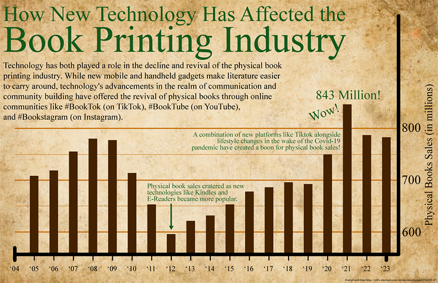

Dan Zalewski's AENG 110 Portfolio |
||
| Home Bookmark Digital Photography Videography Infographic About Me |
Infographic |
|
|
An infographic is an image which combines graphics, images, and text to convey information about a particular topic or subject. Infographics can often be used to help illustrate relational connections between ideas or topics through the passage of time, cause and effect, or another graphical communication technique.
|
|
|  | |
Reflecting on my Project
In review of my infographic, I see areas where I played things safe alongside some places of risk. Looking from the top down, I think the most clear-cut thing that stands out to me was the risk in the topic of my infographic. Given our initial criteria, choosing to forgo a simpler examination of a communication technology in favor of a relational topic such as physical printing and digital innovations led to a project with more risk of failing under greater complexity.
|
| Home My Favorite Project My Youtube About Me |
Copyright © 2025 Dan Zalewski |
|